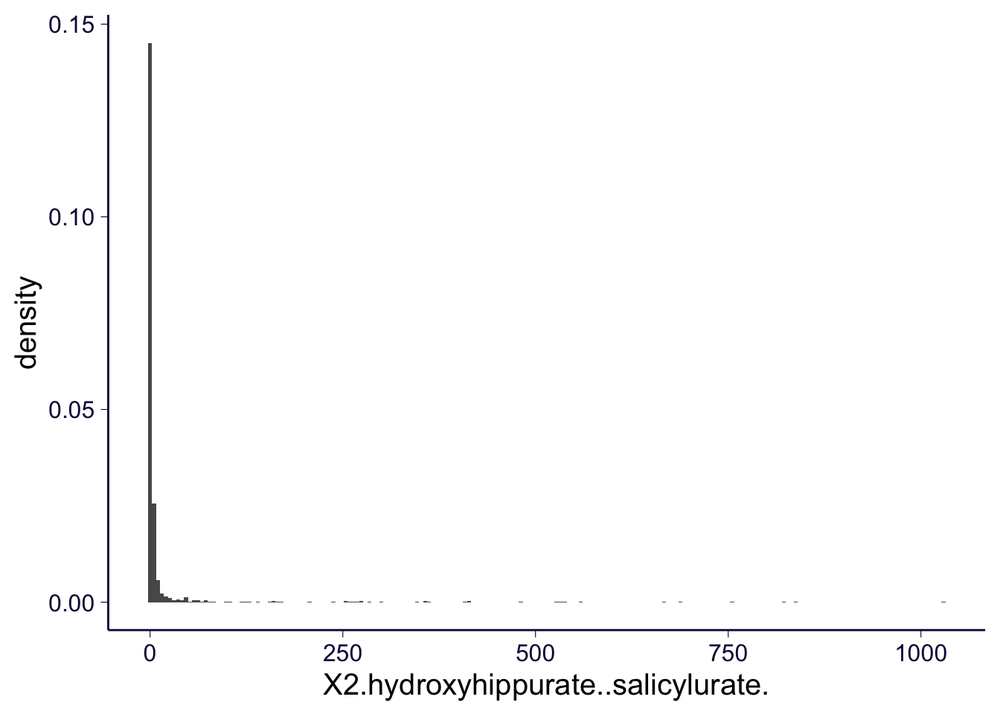

Metabolomics Data Analysis
Owen Melia
11/8/2019
Last updated: 2019-11-12
Checks: 7 0
Knit directory: metabolomics_analysis/
This reproducible R Markdown analysis was created with workflowr (version 1.4.0). The Checks tab describes the reproducibility checks that were applied when the results were created. The Past versions tab lists the development history.
Great! Since the R Markdown file has been committed to the Git repository, you know the exact version of the code that produced these results.
Great job! The global environment was empty. Objects defined in the global environment can affect the analysis in your R Markdown file in unknown ways. For reproduciblity it’s best to always run the code in an empty environment.
The command set.seed(20191108) was run prior to running the code in the R Markdown file. Setting a seed ensures that any results that rely on randomness, e.g. subsampling or permutations, are reproducible.
Great job! Recording the operating system, R version, and package versions is critical for reproducibility.
Nice! There were no cached chunks for this analysis, so you can be confident that you successfully produced the results during this run.
Great job! Using relative paths to the files within your workflowr project makes it easier to run your code on other machines.
Great! You are using Git for version control. Tracking code development and connecting the code version to the results is critical for reproducibility. The version displayed above was the version of the Git repository at the time these results were generated.
Note that you need to be careful to ensure that all relevant files for the analysis have been committed to Git prior to generating the results (you can use wflow_publish or wflow_git_commit). workflowr only checks the R Markdown file, but you know if there are other scripts or data files that it depends on. Below is the status of the Git repository when the results were generated:
Ignored files:
Ignored: .Rproj.user/
Ignored: workflowr.Rproj
Untracked files:
Untracked: code/load_imputed_data.R
Untracked: code/regress_out_dates.R
Untracked: code/regress_out_dates.sh
Untracked: code/regress_out_dates_inverse_normalize.sh
Untracked: docs/figure/
Unstaged changes:
Deleted: docs/.nojekyll
Note that any generated files, e.g. HTML, png, CSS, etc., are not included in this status report because it is ok for generated content to have uncommitted changes.
These are the previous versions of the R Markdown and HTML files. If you’ve configured a remote Git repository (see ?wflow_git_remote), click on the hyperlinks in the table below to view them.
| File | Version | Author | Date | Message |
|---|---|---|---|---|
| Rmd | 0bd3e7e | meliao | 2019-11-12 | Start workflowr project. |
Load Data
I separated the excel files provided into three files, one with the metabolite samples, one with study metadata that seems like we should consider as confounders, and one with chemical information about the metabolites
imputed_df <- read.csv('~/projects/metabolomics/data/metabolomics_converted/imputed-data-7-11-2016-samples.txt', sep = '\t')
print(nrow(imputed_df))[1] 1119print(ncol(imputed_df))[1] 1276keys_df <- data.frame(DIAG_code = imputed_df$DIAG_code, CLIENT_IDENTIFIER = imputed_df$CLIENT_IDENTIFIER)
imputed_df$DIAG_code <- NULL
imputed_df$CLIENT_IDENTIFIER <- NULLHopefully, removing NA values won’t remove too many study participants.
imputed_df <- drop_na(imputed_df)
# There are two factor columns:
imputed_df <- imputed_df %>% select_if(is.numeric)
zero_var <- function(v)any(sd(v) != 0)
imputed_df <- imputed_df %>% select_if(zero_var)
print(nrow(imputed_df))[1] 1119print(ncol(imputed_df))[1] 1261What is the scale?
means <- sapply(imputed_df, mean)
col_devs <- sapply(imputed_df, sd)
df_summ_stats <- data.frame(means = means, stddevs = col_devs, metabolites = colnames(imputed_df))
plt <- (ggplot(data = df_summ_stats, aes(means, stddevs))
+ geom_point()
+ scale_y_log10()
+ scatter_base_theme_())
pltOk, so we have some outliers when looking at means. Let’s find those outliers. Here I am choosing 10 as an arbitrary threshold for outliers.
outlier_df <- df_summ_stats[df_summ_stats$means > 10,]
outlier_names <- outlier_df$metabolites
print(outlier_df) means stddevs
X2.hydroxyhippurate..salicylurate. 16.21248 79.79593
X4.acetaminophen.sulfate 10.21171 52.54217
salicylate 23.65261 190.50399
X...16124 11.85206 47.50370
metabolites
X2.hydroxyhippurate..salicylurate. X2.hydroxyhippurate..salicylurate.
X4.acetaminophen.sulfate X4.acetaminophen.sulfate
salicylate salicylate
X...16124 X...16124Here are the the histograms of the two metabolites with the highest means:
plt <-(ggplot(data = imputed_df, aes(salicylate, stat(density)))
+ geom_histogram(bins = 200)
+ scatter_base_theme_())
pltplt <-(ggplot(data = imputed_df, aes(X2.hydroxyhippurate..salicylurate. , stat(density)))
+ geom_histogram(bins = 200)
+ scatter_base_theme_())
plt
Normality Testing
invnorm = function(x) {
if(is.null(dim(x))) res = invnorm.vector(x) else
res=apply(x,2,invnorm.vector)
res
}
invnorm.vector = function(x) {yy = rank(x)/(length(x)+1); qnorm(yy)}
testnormality = function(df, print_bad_cols = FALSE, threshold = 0.01)
{
cc=0
pvec = rep(NA,ncol(df))
for(ii in 1:ncol(df)){
pp = shapiro.test(df[,ii])$p
pvec[ii] = pp
if(pp < threshold){
if(print_bad_cols){
print("-----")
print(colnames(df)[ii])
print(pp)
}
cc=cc+1
}
}
print(paste0("Non-normal columns according to Shapiro < ", threshold))
print(cc)
pvec
}pvec <- testnormality(imputed_df)[1] "Non-normal columns according to Shapiro < 0.01"
[1] 1258Almost all of the columns fail the Shapiro test.
inv_nrm_df <- lapply(imputed_df, invnorm)
inv_nrm_df <- data.frame(inv_nrm_df)pvec<-testnormality(inv_nrm_df)[1] "Non-normal columns according to Shapiro < 0.01"
[1] 616Although there’s still a lot failing the Shapiro test, inverse normalization does work on the majority of the columns.
Correlation Heatmap
corr_heatmap <-function(df, title = "Correlation"){
cor_df <- data.frame(cor(df))
cor_df$rows <- rownames(cor_df)
df_for_plot <- cor_df %>% pivot_longer(-rows, names_to = 'columns', values_to ='correlation')
plt <- (ggplot(data = df_for_plot, aes(rows, columns, fill = correlation))
+ geom_tile()
+ theme(axis.ticks.y = element_blank(),
axis.ticks.x = element_blank(),
axis.text.x = element_blank(),
axis.text.y = element_blank())
+ labs(title = title))
return(plt)
}
bb <- corr_heatmap(imputed_df)
bbSingular Values
Is the data low-rank? Or approximately low-rank?
svd_results <- svd(imputed_df)
svd_df <- data.frame(singular_values = svd_results$d)
summary(svd_df) singular_values
Min. : 0.281
1st Qu.: 3.435
Median : 9.731
Mean : 49.126
3rd Qu.: 27.841
Max. :6885.814 svd_df$index <- as.integer(rownames(svd_df))
plt <- (ggplot(data = svd_df, aes(index, singular_values))
+ geom_point()
+ labs(x = 'Index',
y = 'Singular Value',
title = 'Singular Values of the Imputed Data Matrix')
+ scatter_base_theme_()
)
plt
pca <- prcomp(imputed_df)
pc_matrix <- pca$rotation
project <-function(df, pcs = pc_matrix[,1:2]){
bb <- as.matrix(df)
aa <- bb %*% pcs
aa <- data.frame(aa)
rownames(aa) <- rownames(df)
return(aa)
}
aa <- project(imputed_df)
plt <- (ggplot(data = aa, aes(PC1, PC2))
+ geom_point()
+ scatter_base_theme_())
plt
sessionInfo()R version 3.5.1 (2018-07-02)
Platform: x86_64-apple-darwin15.6.0 (64-bit)
Running under: macOS 10.14.5
Matrix products: default
BLAS: /Library/Frameworks/R.framework/Versions/3.5/Resources/lib/libRblas.0.dylib
LAPACK: /Library/Frameworks/R.framework/Versions/3.5/Resources/lib/libRlapack.dylib
locale:
[1] en_US.UTF-8/en_US.UTF-8/en_US.UTF-8/C/en_US.UTF-8/en_US.UTF-8
attached base packages:
[1] stats graphics grDevices utils datasets methods base
other attached packages:
[1] forcats_0.4.0 stringr_1.4.0 dplyr_0.8.3 purrr_0.3.2
[5] readr_1.3.1 tidyr_1.0.0 tibble_2.1.1 ggplot2_3.1.1
[9] tidyverse_1.2.1
loaded via a namespace (and not attached):
[1] tidyselect_0.2.5 xfun_0.9 haven_2.1.1 lattice_0.20-35
[5] colorspace_1.4-1 vctrs_0.2.0 generics_0.0.2 htmltools_0.3.6
[9] yaml_2.2.0 rlang_0.4.0 pillar_1.3.1 glue_1.3.1
[13] withr_2.1.2 modelr_0.1.5 readxl_1.3.1 lifecycle_0.1.0
[17] plyr_1.8.4 munsell_0.5.0 gtable_0.3.0 workflowr_1.4.0
[21] cellranger_1.1.0 rvest_0.3.4 evaluate_0.14 labeling_0.3
[25] knitr_1.25 broom_0.5.2 Rcpp_1.0.1 scales_1.0.0
[29] backports_1.1.4 jsonlite_1.6 fs_1.3.1 hms_0.4.2
[33] digest_0.6.18 stringi_1.4.3 grid_3.5.1 rprojroot_1.3-2
[37] cli_1.1.0 tools_3.5.1 magrittr_1.5 lazyeval_0.2.2
[41] crayon_1.3.4 whisker_0.4 pkgconfig_2.0.2 zeallot_0.1.0
[45] ellipsis_0.2.0.1 xml2_1.2.2 lubridate_1.7.4 assertthat_0.2.1
[49] rmarkdown_1.15 httr_1.4.0 rstudioapi_0.10 R6_2.4.0
[53] nlme_3.1-137 git2r_0.26.1 compiler_3.5.1